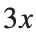
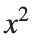
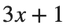
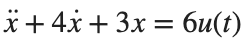
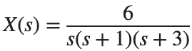
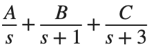

Control Engineering 1 · Week 03 · Linearity에서 Laplace Transform까지
본인 사본에서 코드와 작성란을 직접 수정하세요. 이름: ⟦직접 입력⟧ / 학번: ⟦직접 입력⟧
실행 방법
Live Editor에서 코드 안을 클릭하고 Run Section으로 현재 Section을 실행하세요(Windows/Linux Ctrl+Enter, Mac ⌘+Enter). Run은 문서 전체를 실행합니다. 설명·작성란은 직접 편집하세요.
처음에는 위에서부터 실행하고, 값을 바꾼 Section은 다시 실행하세요. 변수가 없다는 오류가 나면 앞 Section부터 실행하세요. 출력은 코드 아래 또는 오른쪽에 표시됩니다.
환경: MATLAB Online. Symbolic Math Toolbox가 있으면 자동 변환을, 없으면 아래의 부분분수 해 검증을 사용합니다.
1. Linearity 반례
구체적인 값을 넣어 계산하면 Linearity 조건을 만족하지 않는 경우를 찾을 수 있습니다.
실행 전 예상: ⟦직접 입력⟧
x1=1;x2=2;
f=@(x)x.^2;
disp([f(x1+x2),f(x1)+f(x2)]);
직접 수행:

,
,
, , 의 Linearity와 Time Invariance를 각각 판별하고 이유를 적으세요.% ✍ 직접 작성: 아래에 본인 코드를 추가하세요.
바꾼 조건: ⟦직접 입력⟧
실제 결과: ⟦직접 입력⟧
예상과 차이 및 원인: ⟦직접 입력⟧
2. Linear Approximation
라디안으로 계산합니다.
실행 전 예상: ⟦직접 입력⟧
x=linspace(-pi,pi,401);
figure;plot(x,sin(x),x,x);ylim([-2 2]);legend('sin(x)','linear approximation');grid on;
xlabel('x (rad)');ylabel('value');
직접 수행:
- 노트북의 x 범위와 간격을 유지하고, 각 x에서
 를 계산하세요. 오차가 이하인 표본을 고른 뒤, 그중 0을 포함해 연속으로 이어진 구간의 양 끝 x를 적으세요.
를 계산하세요. 오차가 이하인 표본을 고른 뒤, 그중 0을 포함해 연속으로 이어진 구간의 양 끝 x를 적으세요. - rad에서 , 근삿값 x, 절대 오차 , 허용조건 충족 여부를 표로 기록하세요.
% ✍ 직접 작성: 아래에 본인 코드를 추가하세요.
바꾼 조건: ⟦직접 입력⟧
실제 결과: ⟦직접 입력⟧
예상과 차이 및 원인: ⟦직접 입력⟧
3. Laplace Transform
Symbolic Math Toolbox가 있으면 Transform·Inverse를 계산합니다. 없으면 제공된 부분분수 해를 수치 검증합니다. 같은 수학 관계를 확인하는 두 경로입니다.
실행 전 예상: ⟦직접 입력⟧
if ~isempty(which('syms'))
syms t s
disp(laplace(exp(-5*t),t,s));
disp(laplace(sin(3*t),t,s));
X=12/(s*(s^2+5*s+6));
x=ilaplace(X,s,t);disp(simplify(x));
assert(isAlways(simplify(diff(x,t,2)+5*diff(x,t)+6*x-12)==0));
else
% Toolbox가 없을 때: 부분분수로 구한 해를 원래 ODE에 대입합니다.
disp('Transform: exp(-5t) -> 1/(s+5), sin(3t) -> 3/(s^2+9)');
t=0:.01:5;
x=2-6*exp(-2*t)+4*exp(-3*t);
dx=12*exp(-2*t)-12*exp(-3*t);
ddx=-24*exp(-2*t)+36*exp(-3*t);
assert(max(abs(ddx+5*dx+6*x-12))<1e-10);
assert(abs(x(1))<1e-10 && abs(dx(1))<1e-10);
figure;plot(t,x);xlabel('Time (s)');ylabel('x(t)');grid on;
end
직접 수행:
는  에서 0에서 1로 바뀌어 유지되는 Unit Step입니다.
에서 0에서 1로 바뀌어 유지되는 Unit Step입니다.
에서 0에서 1로 바뀌어 유지되는 Unit Step입니다. , sin(4t)의 Transform·Inverse를 확인하고
, sin(4t)의 Transform·Inverse를 확인하고 
, Initial Condition이 모두 0일 때의 해를 구하세요.- 얻은 해를 원래 식에 대입해 검증하세요.
- Toolbox가 없으면

을
으로 분해하여 계수를 구한 뒤 exp 형태의 해와 도함수를 직접 작성해 검증하세요.
% ✍ 직접 작성: 아래에 본인 코드를 추가하세요.
바꾼 조건: ⟦직접 입력⟧
실제 결과: ⟦직접 입력⟧
예상과 차이 및 원인: ⟦직접 입력⟧
반복 숙달과 제출 전 확인
앞의 직접 수행에서 비교한 조건 세 가지를 아래에 정리하세요. 이미 수행한 실험을 추가로 반복할 필요는 없습니다. 예상은 정확한 수치 대신 증가·감소 방향으로 적어도 됩니다.
반복 1 — 조건: ⟦직접 입력⟧ / 예상: ⟦직접 입력⟧ / 실제: ⟦직접 입력⟧
반복 2 — 조건: ⟦직접 입력⟧ / 예상: ⟦직접 입력⟧ / 실제: ⟦직접 입력⟧
반복 3 — 조건: ⟦직접 입력⟧ / 예상: ⟦직접 입력⟧ / 실제: ⟦직접 입력⟧
선택:
예: Degree 값을 Radian 입력으로 넣은 경우
- 30°의 sine을 구하려고 sin(30)을 쓴 경우를 살펴보세요. 이 결과와 sind(30)을 기록하세요.
- sin을 그대로 쓴다면 입력 줄을 sin(pi/6)으로 수정하세요. 수정 전후 값과 입력 단위를 적으세요.
코드, 실제 Output·그래프, 직접 작성한 해석을 포함하세요. 제출은 KLAS를 이용하며 기한은 학기 일정과 최신 공지를 확인합니다.
파일명: 이름_학번_3주차.mlx.